Leo Gray
Person - Guy - Engineer
Person - Guy - Engineer


My name is Leo Gray. I'm currently enrolled at Brandeis University. I haven't quite picked a major yet, but I'm heavily considering physics or some form of Engineering. Although Brandeis doesn't currently offer any form of engineering major, over time they've aquired a large amount of the machines and facilities to allow someone such as myself to work on their own projects and create new things. Even more recently they've finally started teaching a couple engineering course, one of which I'm building up my portfolio for.
You can create your own custom avatar for the masthead, change the icon in the dividers, and add your email address to the contact form to make it fully functional!
For my first project I learned the fundmentals of 3d printing. I started off with a simple name tag. By making use of the PrusaSlicer Text editor, I edited an stl file. I replaced its sample text with my text. Changed the font, the height, and the placement. After that I just had to let the prusa software do its work when compiling it into a g.code (a set of binary intstructions that the majority of 3d printers make great use of). All I had to do during the print was a quick filament swap between the base of the tag and the base of the letters.
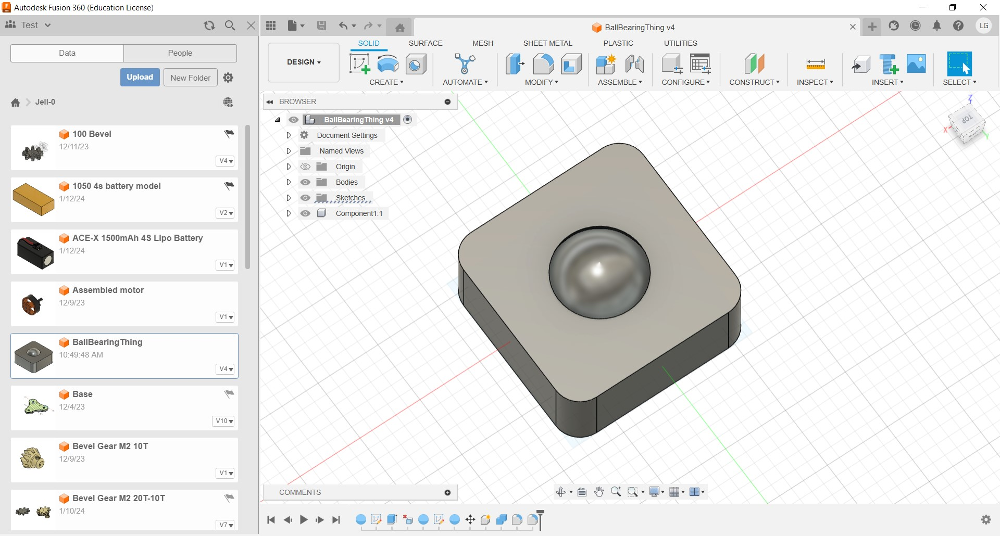For my second 3d print I wanted to try to print out a basic ball bearing. The ability to print moving objects is one of the best things about additive forms of manufacturing. With subtractive manufacturing you can't really create internal moving parts. Difficult due to its shape and complexity. Although it is just a sphere inside a square, the sphere somehow needs to be able to roll around freely. Sphere in general are difficult to 3d print due to the limitations of movement in most 3d printers. With my first attempt the sphere didn't print fully. Likely due to the difficulty that comes with printing the shape. My second attempt I tried to print two smaller versions. One upside down with supports in hope that the ball being on the bottom would help the printer finish the ball first before doing the main chassis. Unfortunetly I learned that PLA can shrink about 2% after it finishes printing. Although the the sphere printed really well, the ball ended up stuck in place due the shrinkrage of the casing. For my 3rd attempt I shrank the ball by 2% to make up for the shrinkage. It became different enough that I evolved it into my next project.
I really wanted to a functional ball bearing that wasn't so square and odd looking. Thankfully McMaster had hundreds of different ball bearings along with their STL's ( model files that AutoDesk Fusion uses) listed on their website. When I found one I liked I simply imported it onto a blank file.
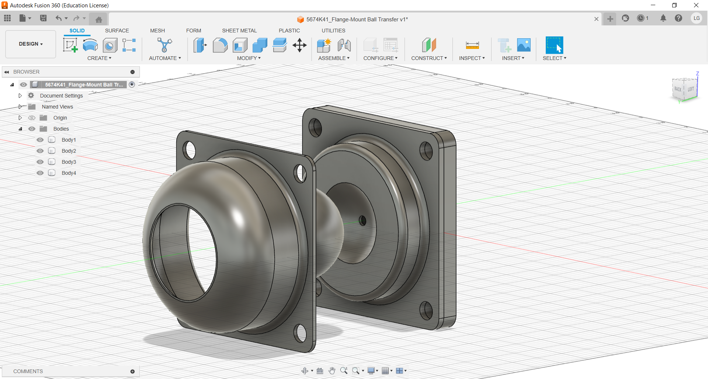Next I began to take the ball bearing component a part to see how McMaster put it together. In doing this it gave me a better understanding of how they manage to produce such great bearings. For instance, I learned that they use a seperate cavity for the ball to sit in opposed to having the ball simply roll around in its casing. Doing this makes the ball roll way more percisly.
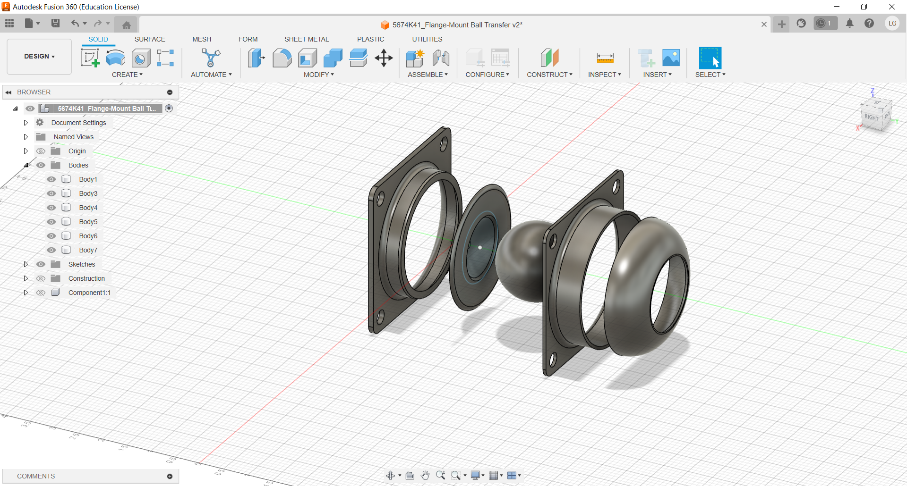Unfortunelty McMaster's ball bearings where all designed towards the ability to manufacture through CNC not not through the additive proccess of 3d printing. So I had to edit the model to be better suited towards FFF (Fused Filament Fabrication). This mostly included seperating the component into much smaller and more manageable bodies that the prusa mini's we had on hand could handle. The main struggle was printing out the ball itself. FFF printers aren't really capable of printing out perfect circles as the make use of polygonal meshes. However the ball with some sanding came out all right. For my next iteration I'd likely just pruchase the ball seperatly and avoid the nuisance that comes with printing it. If we had CNC machines capable of producing high quality sphere, I would definitly spend my time doing learning and meaking use of them.

Finally, I removed the few supports I needed and assembled it. At first I was just going to use a couple of screws and use a ___ to meld the plastic componeents into place, however I had neither of those. In the end I just fused the parts together using a hot soldering iron (sense PLA melts around 190 degrees celcius it was pretty easy. All I had to do was run the tip around the the bearings chassis and it ended it up turning out great.
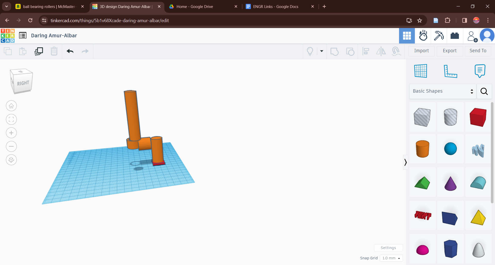How could I possible build this, but not have a way to test it. Because the bearing tester wasn't a priority and I just wanted to get my idea out there I used tinkercad and its ready to go basic shapes to quickly model a tool (simular to a hand drill) that should allow me to test how well the bearing rolls.

For this assignment I needed to create a circuit and fit it into a custom container that would allow the user to make use of the electronics. In this case the electronics displayed the amount of decibles of sound via a number LED lights. Fortunitly soldering the electronics wasn considiberly easy for me as I have had soldering experience in the past. However I did struggle in making sure all of the LED lights heights where alined which made taking the measurments for the container to prove to be much more difficult.
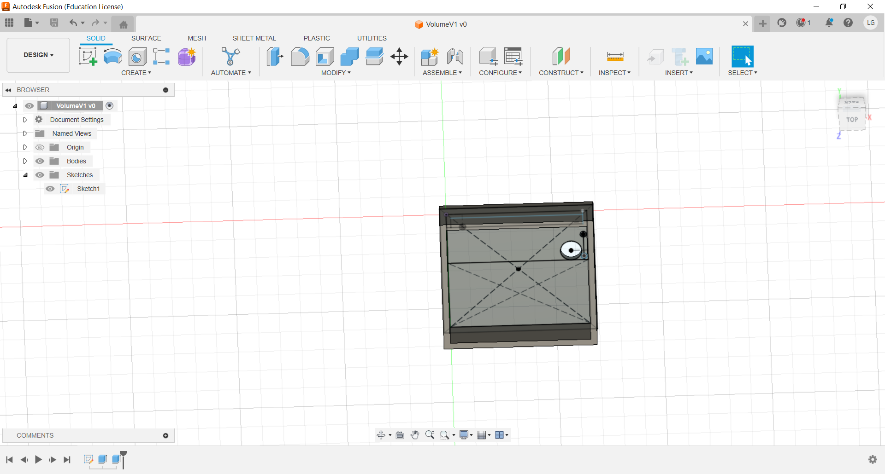I Unfortunately missed a few days of class and as a result I ended up a little bit behind, so I had to come up with some sort of solution that I could rapidly prototype. The Simpler the better. Which is exactly why I just went with a box with a rectangular hole to display the LED lights. Unfortunitly my measurements where horrible and on top of that PLA has a tendency to shrink. Likely due to the difficult that came into measuring the size of the LED lights by hand. Next time a plan on simply looking up the exact measuremnts of the components through the actual manufacturerer of the component. There was no reason for me to be fumbling around with a calbiir when the exact measurments are likely listed on the component manufactuer's website. Soon after I had to make larger version of it with larger holes for the LEDs

Unfortunately I didn't have much time to go through enough iterations to fix every single problem with my prints, but I had a very good idea of all of issues involving sizing so I moved on to creating a box out of MDF (Medium Density Fiberboard, a material comprised of heavily compacted fibers). Making use of Fusion 360s parameters I was able to set up an outer box of wich I control the demensions of and even the connecting tabs of useing the parameters. From there I just set up another piece with a whole in it to fit all of the LEDs which ended up fitting perfectly. The only problems was I cut out the hole on long axis when I was supposed to cut it out on the shorter axis. Unfortunitly I didn't really have enough timne to fix this mistake, but because of the paremeters I set I could just swap the demensions and it in theory should be fixed. Overall I think I learned a lot in terms of Cadding with Fusion. From learning how to really make use of components and make use of set parameters throughout this build and hopefully my future builds.

For this project we paired up and got print out and construct ___ e-enbalbe Phoenix Hand. Printing most of it was pretty easy. The wrist on the other hand needed to be heat pressed into shape. ___ reccomends that we make use of a hot water bath and then use a mold to force the part into shape. Unfortunitly it's not what most people would consider classroom safe. Instead we used a mold and pressed fit the wrist into shape using a heat gun hot enough desolidify the PlA, but not enough concentrated heat to cause any serious injury.
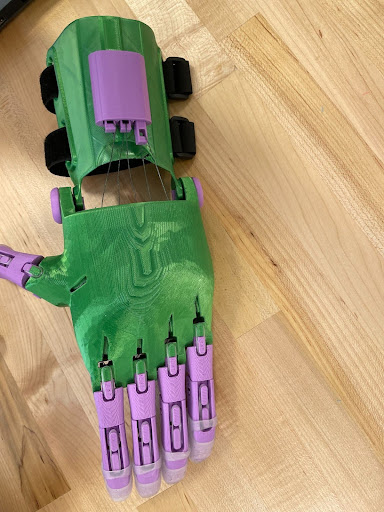The construction of the hand was straight forward. Minus the finger length and finger tension. On the hand there are 3 different archetypes of fingers, the thumb, the long middle and ring finger, and the shorter index and pinky finger. At first glance, all finger lengths appear to be the same. E-nabel’s written guide doesn’t specify the difference between any of the fingers. Fortunetly the video we watched in constructing the hand specifies the length differences that we hadn't noticed into 20% into build. This caused us to misplace the fingers repeatedly, until we noticed the difference and pulled up a video showing the differences. We also had trouble stringing the fingers. Rather than reading/watching the guides for stringing, we used an example hand as a reference that individually stringed each finger. After struggling with the many inconsistencies with tension we finally went back to the video and learned That we were supposed to string the pink and ring finger together and index and middle finger together with two seperate loops, while the thumb was the only finger that was supposed to be strung individually. I feel that although the picuture guide is pretty good at giving the viewer a general idea of how the hand is constructed it simply doesn't give very good instructions. If the guide had lead us step by step and explained each individual step I believe it could've helped us from creating a large amount of unnecessary mistakes.
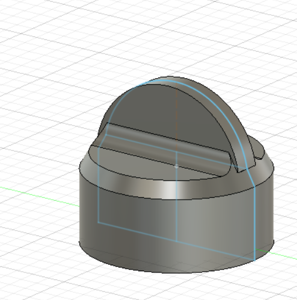Next we were tasked to modify it in some useful way. My partner and I decided that it would be increadibly helpful to make a way to easily adjust the tention in the strings. That way the user could in theory change which fingers close and don't close allowing them to do a few other tasks. Such as using just the index and thumb to use a pencil. We decided the best way to do this would be to imploy the same method that guitars use. I 3d modeled stick on tabs for the screws that were orignally used to tension the strings. That way we could use a 3d printable guitar tuner I found from Mr_MegaTronic on Thingiverse). We also decided it would make sense to give each finger it's own individuals tension line to allow for the ability adjust each one individually. This in theory could allow the user to use the guitar tuner with one hand to adjust the tension of their strings to their liking for specific tasks.
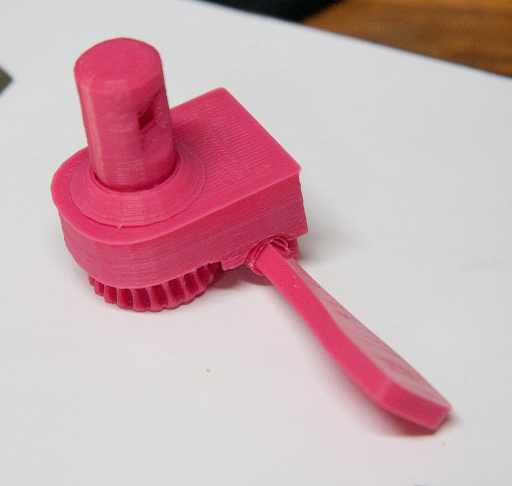Overall I feel like we learned a lot aobut how we could imploy are aquired skills and ideas for the benifit of all sorts of people. Even those we barely know.
For our project we really wanted to tackle the lack of safe water in remote areas like Cambodia. 70% of Cambodia's 16 million people lack access to safe water, and 63% lack access to safe sanitation facilities, with rural communities disproportionately affected. Currently there exists a number of sanitation facilities that provide clean water to populated areas. There of course exists a number of other more mobile filters that can be used in more remote areas, however they’re expensive and in general difficult to get whilst living in remote 3rd world areas.
Most modern solutions involve a series of different filtrations. Sedimentation (where water passes through a number of different sized grains leaving out larger particles behind), carbon filtration (absorbs bacteria), and reverse osmosis (Uses a semipermeable membrane that only allows water molecules and a few minerals to get through. By maintaining a higher pressure on one side of the membrane water is forced through while the remnants are forced down a drain.) The big issue with all of these solutions is that every single one of the filters at some point need to be replaced
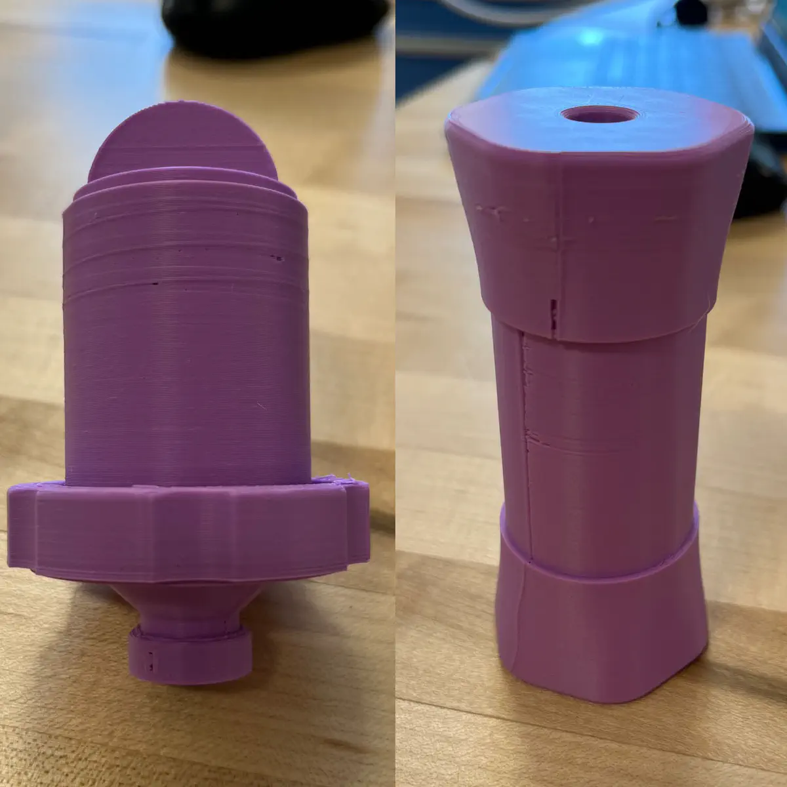One product that caught my group's eye was that of FairCap. Where they created a printable water bottle cap that people could use as a mini water filter. Instead of relying on buying multiple filters they chose to make it easy for people to build their own filter using local activated carbon and any form of cotton. As long as they leave the water out in the sun to treat it with uv radiation they can end up with pretty clean water. To make the water even more safe you can attach a UF (ultrafilter) membrane to the end of it. It's great except for the learning gap that comes with using it. People need to learn how to build their own filters which can come as a challenge. Another problem is the fact that anything 3d printed really needs to be treated in order to be food safe. Otherwise bacteria can develop within the print. 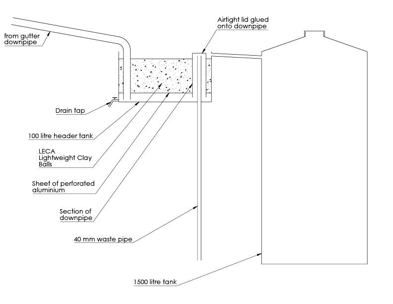Another method we saw was John Pedersen’s rain water filter. Where one can collect rainwater and filter it out through common filter solutions. This of course has its own problems, the main one being the fact that its filters need to be changed. Another problem is the labor that would have to go into setting up a tank. Alongside that, not all parts of the world get rain.
Hopefully one day people will be able to see our product used in all sorts of remote locations. Whether small villages in Vietnam or households in central Africa. Wherever clean water is scarce. I strongly believe we can measure our success in our product by how much bacteria we manage to filter out as well as how many individuals we are able to get our product into the hands of those in need. Currently we’re experimenting with fine tuning the Faircap to be more mainstream and capable. We plan on treating it with a resin to prevent possible bacteria growth. Currently we are working on solutions in teaching how to set up the cap and how to manufacture the cap in a way that makes it as assembled as possible.
In the second part of our project, we deliberated on the optimal method for implementing our idea. After extensive research, as documented in project five, we narrowed it down. We discovered that practical carbon filters and reverse osmosis systems are effective but prohibitively expensive. Their high cost makes them challenging to obtain, especially for people in rural areas. Additionally, these advanced filters require replacement every few years, further contributing to their overall expense. We eventually narrowed it down to just two methods Ceramic Filtration: -This method involves using ceramic pots to capture unhealthy particles. Ceramic pots are relatively accessible and cost around twelve dollars. Moreover, they are reusable. -They’re reproducible, however it might prove difficult to produce large quantities in Cambodia and Vietnam due the lack of economic prowess available FairCap Approach: -Inspired by FairCap, we explored an alternative approach. The FairCap concept centers around creating a container that enables individuals to build their own filters using readily available materials. -The FairCap costs less than a dollar, making it incredibly affordable. Like ceramic pots, it is also reusable
In the end we chose the FairCap method because we recognized that even twelve dollars can be a significant financial burden for many individuals in rural areas of Cambodia and Vietnam. Both methods have demonstrated effectiveness, but our commitment to accessibility led us to prioritize the FairCap solution. By doing so, we aimed to empower communities with a cost-effective and sustainable water filtration option.
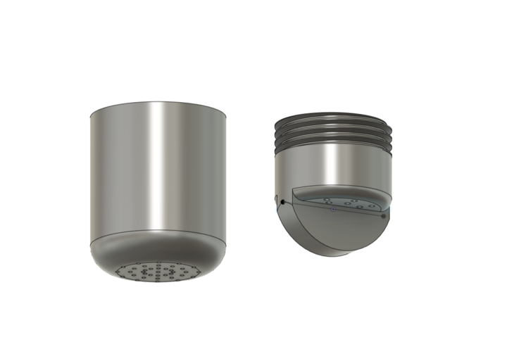Once we figured out that we wanted to go with the FairCap method, we printed out a number of them with different sizes, different infills, and varying numbers of walls. We also briefly tested a couple materials. In that process I found that the Faircap just in general was brittle due to its thin walls, even with stronger materials like PETG. Along with that, it was really difficult to print properly. The top part relied on a few small holes for water to flow through. Our prusa mini’s really struggled to not fill them in. Along with that the print needed supports that no matter what I tried were difficult to remove from many of the small holes within the structure. Along with that we wanted a way to be able to attach the filter to a water tap to help control the water in larger containers. To do this I ended up re-modeling the entire Faircap from scratch as they only provided the STL (Geometric mesh) and didn’t provide a STEP file (an object file). Nonetheless, I made the holes much wider to help printables, added thicker threads to increase strength between the cap and the filter body, and I made the walls wider. Then I modeled a screw-on funnel that connects to a tap that I also modeled based off of a few models I saw on Thingiverse.
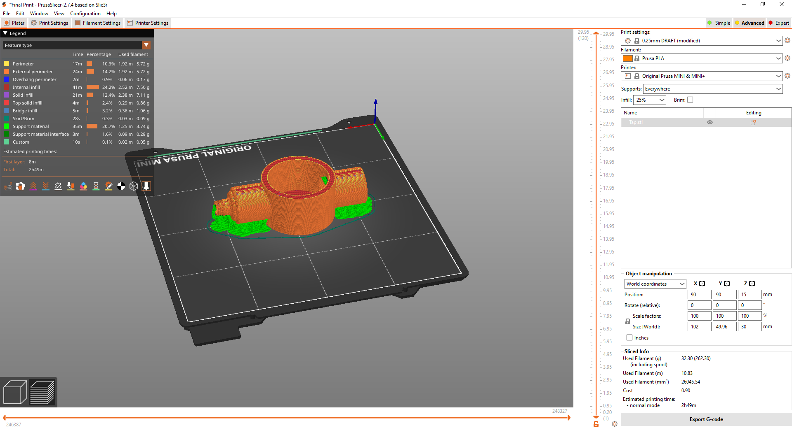 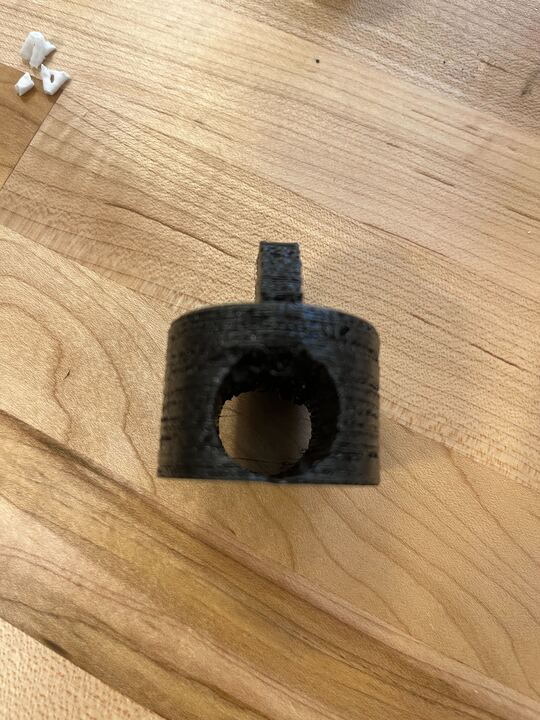For the material we found that although PETG is considerably stronger than PLA, but PLA is significantly easier for us to print and work with due to how much experience in general we have working with PLA. Along with that our item doesn’t necessarily need to be really strong. It just needs to be strong enough to handle a good number of drops and falls in case someone drops it. Which our PLA prints were more than able to handle. One thing we did decide to change was the switch in the water tap. We found that TPU in general was better at keeping a water tight fit due to its high level of flexibility.
We did come across one problem when it came to 3d printing our product overall that we can’t fix at the moment. Which is the fact that the gaps between the layers of plastic is the perfect place for possibly harmful bacteria to grow. To solve this in our prototyping we treated our sample with a coating of a resin (XTC-3d). However if we are going to produce our product on a larger scale we will likely need to use a different manufacturing method that minimizes the risk of bacterial contamination like injection molding (which leaves little to no gaps, and has no layer lines).
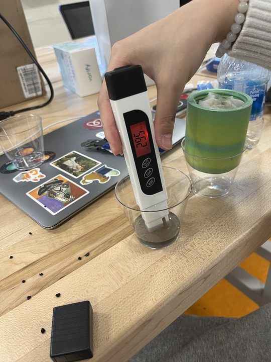Now comes the actual testing process. We unfortunately didn’t have a real way to test bacteria levels in the water, but we were able to easily test the number of particles that existed in the water which gave us some idea of how effective our tool was. We compared the PPM of regular filtered Brandeis water as our base, to the water in our local pond (Massell Pond which is known to be somewhat disgusting), and our pond water filtered through our product. We found that the water filtered Brandeis water was around 85 PPM which is considered above average and clean drinking water. We found that the pond water unfiltered was about 400 PPM which is technically considered drinkable; its quality is often described as very poor. After our first test we managed to filter the water down to about 300 PPM which is considered to be somewhat poor. We believe a large amount of our PPM wasn’t debris or bacteria, but due the activated carbon seeping through into the water, which also explained why our water was a grayish black. To help filter out the carbon particles we simply added more layers of cloth which brought the PPM to be between 200 and 250, which is considered acceptable. Unfortunately the particle count isn’t what really matters as in Vietnam and Cambodia the issue has mostly to do with the bacteria E-Coli and not the ingestion of foreign debris. Nonetheless our product clearly could be improved. We still need to invest more time into further research of how to filter out both the carbon and possible E-coli more efficiently.
For the short amount of time we spent developing our product we’ve really made a lot of progress in further developing and learning about methods to better combat the water crisis that perils a significant part of many people’s lives.